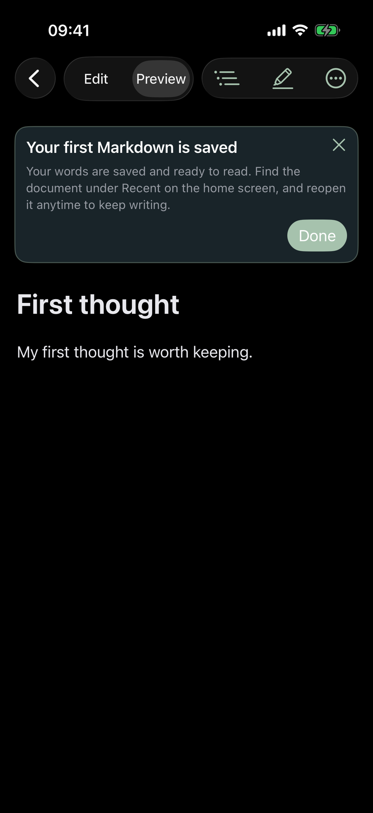
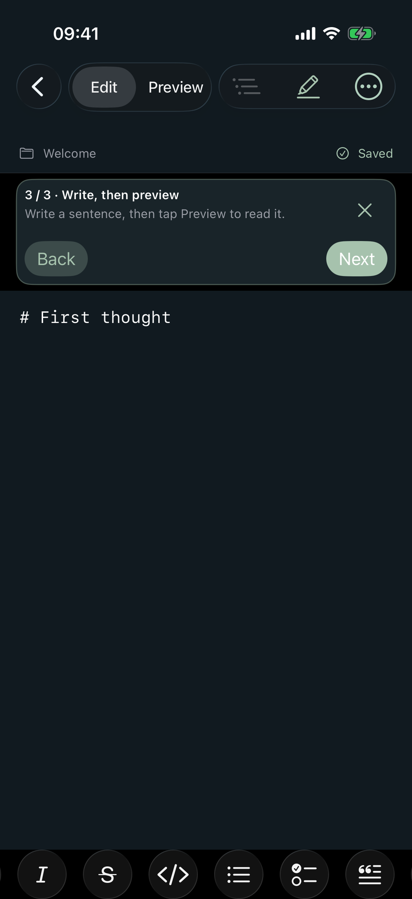
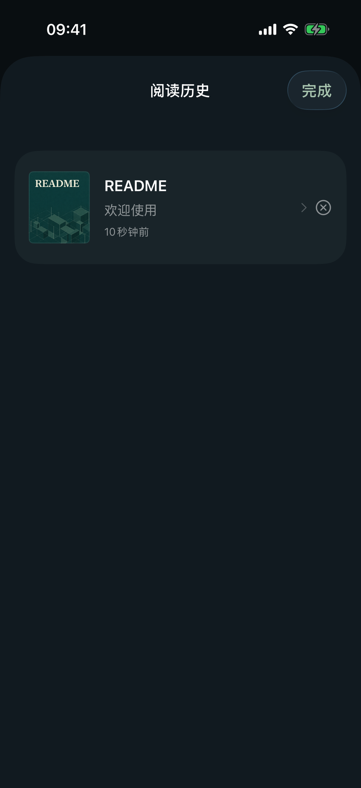
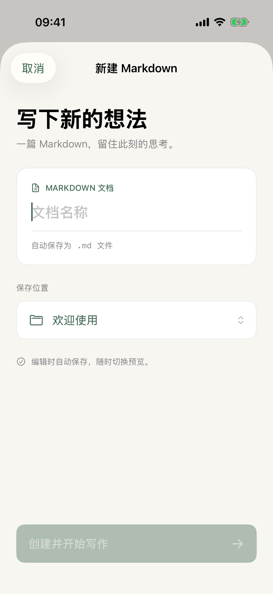

Read your Markdown
Open local files and folders, ZIP projects, or public GitHub repositories. Read syntax-highlighted code, diagrams, tables and math.
MDFolio is a Markdown reader and notebook for iPhone and iPad. Highlight a passage, write what it means to you, then find it again in the original document.

An actual MDFolio screen. Start with a built-in sample or open your own files.
Markdown files stay at the center of your library. Your highlights and notes travel beside them, ready whenever you want to read, write or reflect.
A practical reading loop for the Markdown files and projects you already have.
Open local files and folders, ZIP projects, or public GitHub repositories. Read syntax-highlighted code, diagrams, tables and math.
Select a passage, mark it in color and add a personal note. Annotations stay beside the Markdown, without changing its text.
Browse notes across a project and revisit highlights in spaced daily review. If a passage changes, relink the annotation to its new location.
Create and edit Markdown, preview as you read and use split view on iPad. Formatting tools and keyboard shortcuts help you stay in flow.
Organize documents in familiar folders. Export a project as ZIP with annotations, or export notes as readable Markdown.
Daily review brings saved highlights back using spaced intervals. Open a card to jump to its passage and the note you left there.
No setup, account or connection needed for the sample reading flow.
Tap “Try reading and annotating” on the home screen, or open your own Markdown.
Select a line in the preview and add a highlight or a note. Your original file stays untouched.
See your note, then open the source to return to the passage you saved.
Screens shown here are captured from MDFolio on iPhone.



MDFolio reads local files and explicitly selected folders. GitHub import needs internet access. Features vary by device and file provider.
MDFolio stores documents, annotations, bookmarks, reading positions, review schedules and tutorial progress on your device. The app does not require an account and does not include advertising or an analytics service.
Last updated: October 24, 2026. Privacy details are also available offline in the app.
Questions or feedback? Email us with the MDFolio version, your device and iOS version, what you were doing, and any error message. Please do not include private documents or sensitive information.